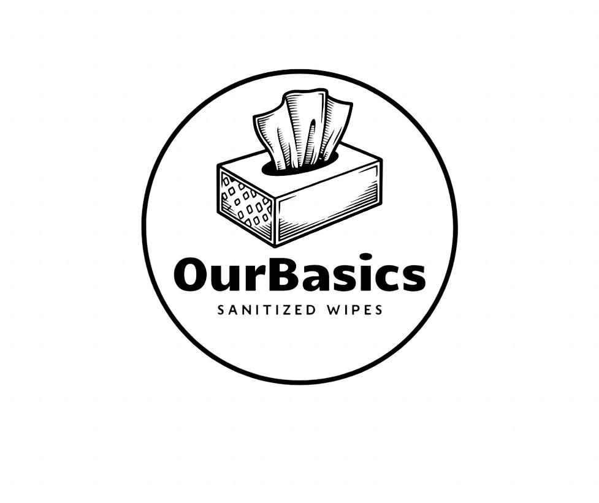

Hygiene-first formula
Made for hand cleaning moments where simple freshness is not enough.
OurBasics combines the convenience of wet wipes with the hygiene-first reassurance of sanitizer. Soft on skin, practical on the move, and designed for homes, offices, travel, and retail spaces.

Built for pharmacies, workplaces, hotels, airlines, schools, and daily family care.
Why sanitized wipes
Wet wipes help people feel fresh. OurBasics is designed to help people feel protected too, with a clean user experience that fits naturally into everyday routines.
Made for hand cleaning moments where simple freshness is not enough.
A soft wipe texture and balanced finish help avoid harsh, sticky sensations.
Compact, modern packaging makes the product easy to carry, display, and trust.
Made for movement
OurBasics wipes remove visible mess and support hand hygiene in one simple motion. They fit into bags, counters, cars, front desks, lunch boxes, and retail shelves.
Convenient after public transport, shopping, and food handling.
Useful for workplaces, clinics, hospitality, and event venues.
Designed to feel more premium than commodity wet wipes.
Where it works
Impulse-ready packs for shelves, counters, and checkout zones.
Portable hand cleaning for airports, taxis, buses, and trains.
Desk-friendly wipes for shared spaces and daily routines.
A thoughtful hygiene amenity for hotels, restaurants, and events.
Partner with OurBasics
Build a cleaner everyday habit with a product that is easy to understand, easy to use, and easy to recommend.